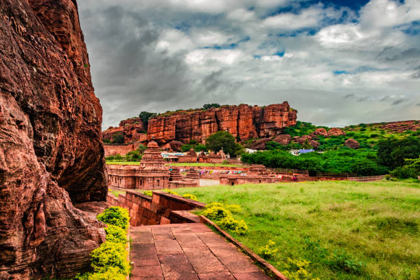
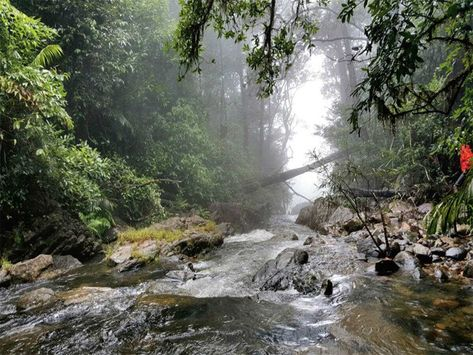

It’s all about the beautiful moments

Bandipur National Park has the second highest Tiger population in India. Bandipur National Park is located in Gundulpet taluk, Chamarajanagar district.

Srirangapatna is a town and one of the seven Taluks of Mandya district, in the Indian State of Karnataka. Located near the city of Mysore, it is of religious, cultural and historic importance.
Hampi is an ancient village in the south Indian state of Karnataka. It’s dotted with numerous ruined temple complexes from the Vijayanagara Empire.

The Mysore Palace, also known as Amba Vilas Palace, is a historical palace and the royal residence at Mysore in the Indian state of Karnataka.

Coorg is a popular coffee producing hill station. It is popular for its beautiful green hills and the streams cutting right through them.
Halebeedu (formerly known as Dwarasamudra) was the ancient capital of the Hoysalas just 17 km away from Belur.

Nagarhole National Park, also known as Rajiv Gandhi National Park, is a wildlife reserve in the South Indian state of Karnataka.
Jog Falls is a waterfall on the Sharavati river located in the Western Ghats near Sagar Taluk of Shivamogga District, Karnataka, India.